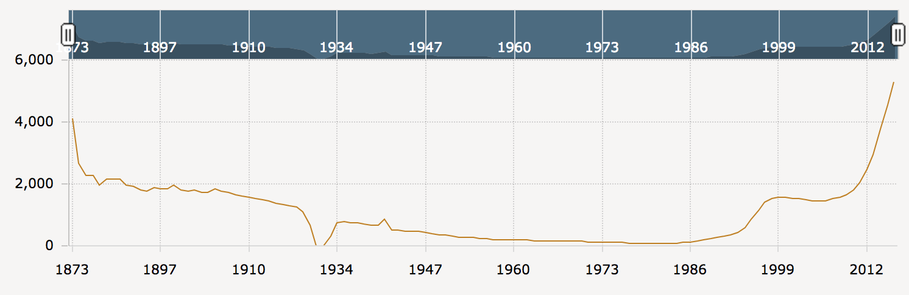
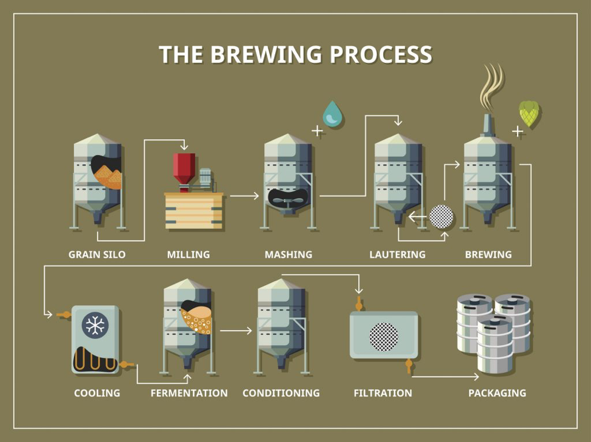
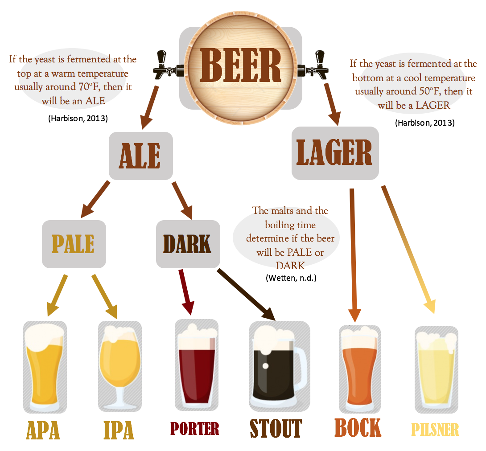
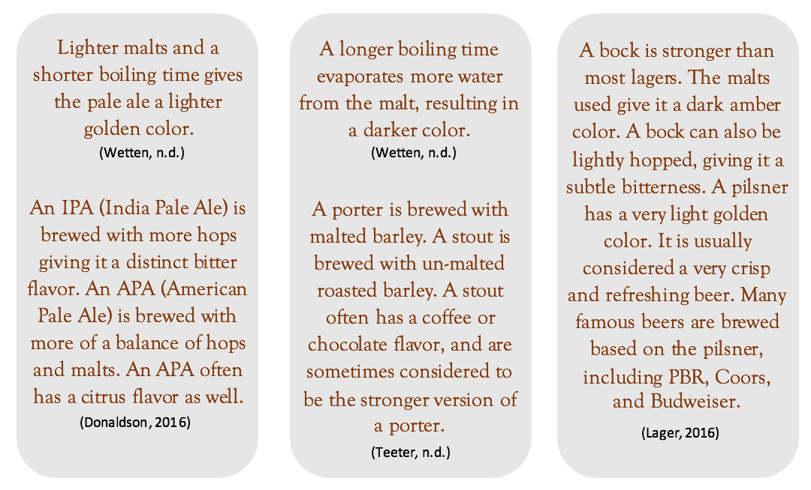

The popularity of Craft Beer has skyrocketed since the year 2000, with more businesses, customers, and beer enthusiasts embracing the trend across the US. On top of that, the number of breweries nationally is at an all time high, making the time we live in a true Craft Beer revolution.
You may be wondering how this liquid gold you’re being introduced to is made. The process is rather complicated, but interesting nonetheless, especially for the up and coming craft beer enthusiast.
The first step in brewing is the milling, or crushing, of the malted barley being used to brew. When milling, it is important not to crush the barley too little or too much, as this would produce a poor texture in the final brew.
After the grain is properly milled, it is mixed with hot water in an instrument known as the mash tun to form what is called the mash. This process is known as mashing, which activates enzymes in the grain that contributes to the flavor of the beer. Altering temperatures in this process can change the beer’s flavor. Colder mashes result in a sweeter tasting beer, while warmer mashes lead to a drier tasting beer.
During mashing, a sugary liquid known as the wort is produced. Lautering is the separation of the grains from the wort. The mashed mixture is added to a device known as the lauter tun, which drains the wort from the bottom while keeping the spent grains inside. Water is also typically added during lautering to extract more fermentable sugars from the grain. This process is called sparging.
After the wort is isolated, it is brought to a strong boil for one to two hours. Boiling sterilizes the wort, and hops introduced during the brewing process add flavor, aroma, and bitterness depending on when they are introduced to the wort. Hops added earlier in the boiling process tend to lead to more bitter beers, while hops added later ad a sweeter taste and aroma to the wort. After boiling, the mixture is sent to a whirlpool to collect accumulated hops and proteins from the brewing process. The mixture is immediately cooled after this process.
Once the wort is cooled, it is transferred to a steel vat where yeast is added. Once added, the yeast begins to consume sugars, producing carbon dioxide and alcohol. Fermentation can take from a couple of days to over a month depending on the beer being made. For brewing ales, the yeast sits at the top of the mixture at a higher temperature (65-76 degrees), and ferments much quicker than lagers. For lagers, the yeast sits towards the bottom of the mixture at a cooler temperature (45-55 degrees), and takes much longer to ferment.
Fermentation is complete once the yeast has consumed all the sugar. However, yeast still plays a crucial role in the remainder of the brewing process. Fermentation produces many off flavors in the beer, which yeast can remove. Conditioning takes place over about a week for ales and up to a few months for lagers. After conditioning, the yeast and beer in the mixture become separate layers, which is easily filtered out for packaging.
Once separated through filtration, the beer is ready for consumption. However, one final step, packaging, is required in the brewing process. Packaging is simply the transfer of beer to a vessel for mass consumption (typically bottles and cans). During packaging, the beer is usually force carbonated to compensate for the carbon dioxide lost to the atmosphere during the brewing process.
Now that you have a basic understanding how beer is made, you can begin to determine your favorite craft flavors based on their differences in brewing processes.
There are hundreds of unique styles of beer; some of the most popular are pilsners, pale ales, bocks, stouts, and porters.
 